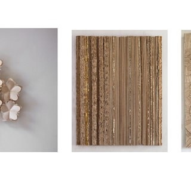

The Tactile Line
How Inni Parnannen, Mane Phély and Erin Vicent translate the quiet geometries of nature into intimate structures
September 12 – November 2, 2025

Inni Pärnänen’s Summer series captures the quiet intelligence of geometry found in nature. Built from intertwining pentagonal modules, her works translate organic structures—like those of leaves or honeycombs—into airy, geometric compositions that invite light and shadow to participate in their form. Each element echoes nature’s balance between fragility and strength, resulting in pieces that appear both delicate and resilient.
Using laser-cut Grada birch plywood, Pärnänen fuses craftsmanship with ecological innovation. The material’s responsiveness to light, air, and humidity parallels the rhythms of the natural world her work reflects. As sunlight moves across the day, the sculptures animate with shifting shadows, creating a living geometry that feels simultaneously precise and poetic. Summer brings the fluid logic of the outdoors into architectural space—a meditation on structure, balance, and the beauty of patterned repetition.
Inni Pärnänen’s works and lives in Helsinki, Finland. She graduated as a goldsmith from the Lahti Institute of Design and completed her Master’s degree at the University of Art and Design Helsinki in 1998. She has been designing under her own name since the end of the 1990s. Her work has been reviewed in publications and has won several prices and grants. Her works have been placed to various collections worldwide. She is now represented by the Muriel Guépin Gallery in New York, USA.
TO RECEIVE A PDF WITH PRICING AND AVAIALBLE WORKS PLEASE CONTACT US HERE